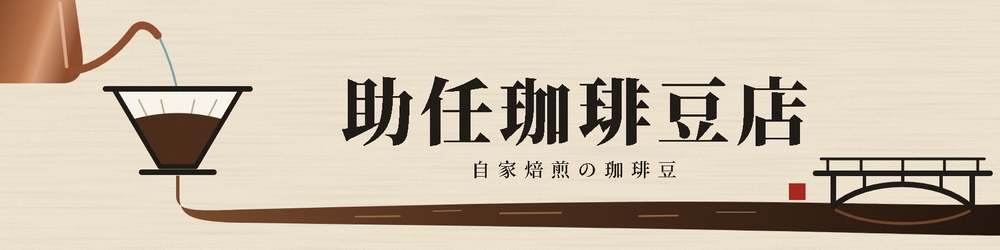
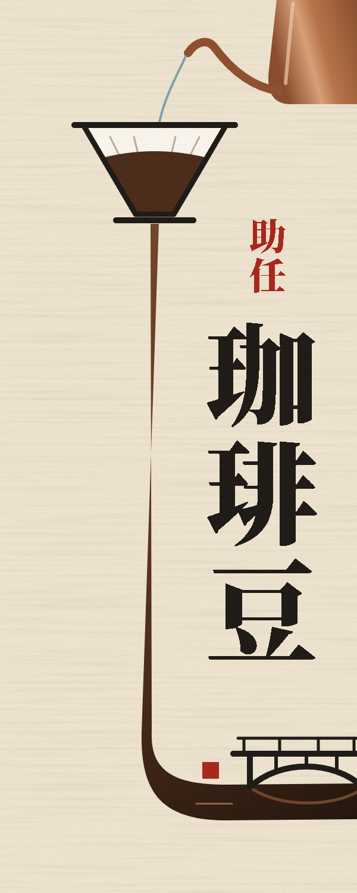

助任珈琲豆店 看板の見た目案（色と質感）
細口ケトルから注いだお湯がドリッパーを通り、落ちた一筋がそのまま助任川になります。川には助任橋がかかり、橋のたもとの赤い四角が店の場所です。
ケトルは銅、ドリッパーは白い磁器にしました。湯は透明な青みで落ち、ドリッパーを通ってからは珈琲の茶色になります。川は下流ほど深い色です。板は生成りで、刷りのざらつきを少し付けています。
横長看板

袖看板

画像を押すと、大きく表示されます。
細口ケトルから注いだお湯がドリッパーを通り、落ちた一筋がそのまま助任川になります。川には助任橋がかかり、橋のたもとの赤い四角が店の場所です。
ケトルは銅、ドリッパーは白い磁器にしました。湯は透明な青みで落ち、ドリッパーを通ってからは珈琲の茶色になります。川は下流ほど深い色です。板は生成りで、刷りのざらつきを少し付けています。


画像を押すと、大きく表示されます。